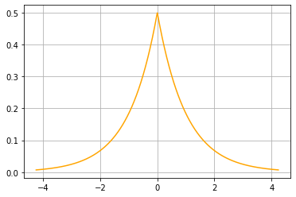

מה יהיה עם הכתיבה! בינתיים זה נדחה כל פעם לשבת בלילה, הדד-ליין שהצבתי לעצמי. לעמוד בדד-ליין אני חייב, אחרת מי יודע אילו
זוועות עלולות לקרות, אבל יוצא שהתוכן שנוצק לפוסט לא בדיוק עשיר בויטמינים. וזה לא שנזכרתי ברגע האחרון, הרי במהלך השבוע
חשבתי כמה וכמה פעמים עליו, על רעיונות. החלטתי לנסות לכתוב משהו על התפלגות לפלס, שהופיעה השבוע בקורס כיווץ בתור ההתפלגות
ש…תכווץ, ועכשיו ביליתי שעה וחצי בקריאה באינטרנט ובספר ששמו The Laplace Distribution and Generalizations
, אבל כנראה שזה
גם לא מספיק. מה אפשר לשפר? אולי להבין שלכתוב משהו כזה בסגנון של "לא מדויק" לוקח יותר משבוע, לפחות כשהכתיבה כוללת למעשה
גם מחקר. אולי שצריך כבר באמצע השבוע להיות עם איזשהי טיוטה ביד. בכל מקרה, גם השבוע אל תצפו ליותר מדי.
השבוע האוניברסיטה חזרה לחיים, אחרי חג פסח הגיעו ההקלות והשיעורים חוזרים לקמפוס. אני ביקרתי ביום שני, הביקור השני שלי מאז תחילת התואר, והתפעלתי מהשינוי. אם בפעם הראשונה הגעתי לקמפוס שומם ושקט, עכשיו כל הילדודס של שנה א' בתואר ראשון הולכים בקבוצות של עשרים משיעור לשיעור. מה, גם אני הייתי כזה פעם, מוקף חבורת סטודנטים עם חיוך מבועת אחרי הרצאה באינפי? כל העסק גורם לי להרגיש זקן, אבל גם מרומם, אחרי שנה שכולנו היינו וירטואלים. הביקור גם עורר תהיות לגבי לחזור לירושלים, אבל בנושא זה אני עוד חלוק. נהייתי איש של ים, ואת זה אין בעיר. נפגשתי גם עם חוקר לגבי פרויקט מעבדה, והוא הציע משהו שנשמע מעניין, אבל עם פרויקטים כאלה, לך תדע אם נפלת על בעיה בלתי פתירה. בכלל, כל העסק הזה של מה לחקור, לאדם חסר כיוון כמוני, מסובך למדי.
טוב, אז אמרנו לפלס? קודם כל, הנה תמונה של הצפיפות:
מה אפשר לראות פה? ההתפלגות סימטרית, וקצת מזכירה התפלגות נורמלית, אולי חוץ מהשפיץ סביב 0. ואכן, יש קשר בין השתיים. פונקציית הצפיפות נראית כך: \[f(x;\mu,\lambda)=\frac{1}{2\lambda}\exp\left(-\frac{|x-\mu|}{\lambda}\right)\] כמו בנורמלית, גם פה מופיע האקספוננט, אבל הפעם במקום ריבוע יש לנו ערך מוחלט. מסתבר שאי שם בשנת 1774, לפלס כתב איזה ממואר ושם פירט את כלל השגיאה הראשון שלו
שכיחות השגיאה ניתנת לביטוי כאקספוננט של גודל השגיאה בערך מוחלט
איך זה מתחבר לצפיפות? אם נניח שמה שאנחנו רוצים למדוד הוא \(\mu\), ומה שאנחנו מצליחים למדוד הוא \(x\), אז בעצם הכלל מציע הנחה על התפלגות השגיאה. הכלל השני של לפלס הוא דומה
שכיחות השגיאה ניתנת לביטוי כאקספוננט של ריבוע גודל השגיאה
וזה נותן את התפלגות גאוס (שאולי צריכה גם להקרא התפלגות לפלס). טוב, כל אחד יכול להמציא כלל, השאלה למה להעדיף אותו על כל אחד אחר. אז להתפלגות הנורמלית יש שם טוב, משפט הגבול המרכזי וזה, ולכן כולם אוהבים אותה, אבל מסתבר שיש לא מעט דברים שלא יהיה נכון לומר שהם מתפלגים נורמלית. בפרט, אחת התכונות שמבדילות את גאוס מלפלס היא שהזנב של לפלס יותר שמן, משמע יש יותר סיכוי לערכים לא טיפוסיים. טוב, אני לא חושב שההסבר פה מספיק אפוי, אז לפחות נסיים במשהו טריוויאלי מחד ומעניין מאידך: איך לבדוק האם הדאטה שיש לכם מתפלג גאוסיאנית? או לפחות, סוג של תנאי הכרחי. נניח ש-\(e_i\) הוא שגיאת המדידה, או המרחק של דגימה מהתוחלת בערך מוחלט, ונגדיר את ארבעת המספרים הבאים: $$\begin{align} nS_1=\sum e_i,&\qquad nS_2^2=\sum e_i^2 \\ nS_1^3=\sum e_i^3,& \qquad nS_2^2=\sum e_i^4 \\ \end{align}$$ ה-\(S_i\) האלה הם ממוצע הערך מוחלט של השגיאה, שורש ממוצע הפרש הריבועים (RMSE) וכן הלאה. היחס שצריך להתקיים ביניהם הוא משהו בסגנון: $$S_1:S_2:S_3:S_4=1.000:1.253:1.465:1.645$$ אז אם זה לא מה שקורה בדאטה שלכם למרות שאתם מניחים התפלגות נורמלית, הרימו גבה.